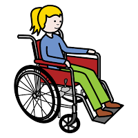

<=Regresar
Siguiente=>
DISCAPACIDAD MOTRIZ
La persona con discapacidad motriz puede presentar una movilidad limitada a causa de una secuela o bien alteraciones generales o específicas en diferentes partes del cuerpo.
